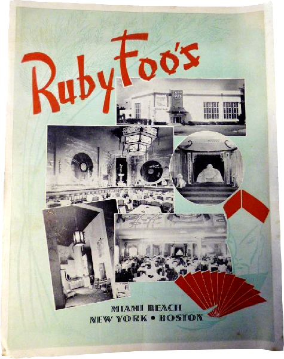
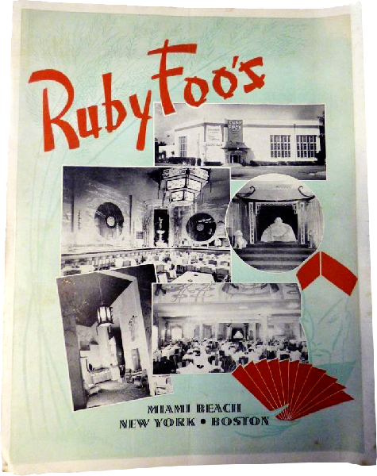
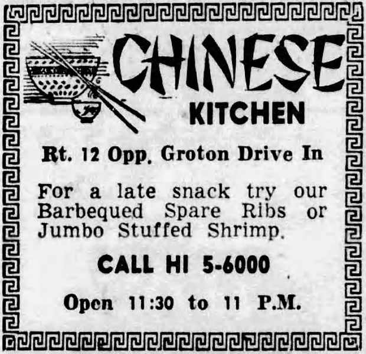
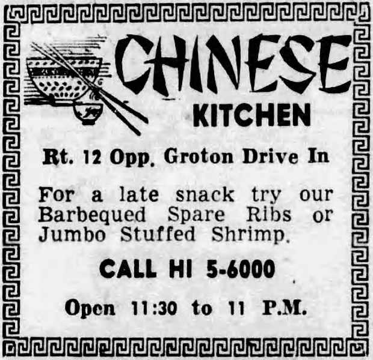

二十世紀四十年代，趙藻華在紐約傳奇餐廳如林芳園與 Ruby Foo’s 工作時，默默記錄下六百多道粵菜食譜。數十年後，這些手寫筆記被他的孫子發現，揭開了華人移民餐飲史的新篇章。
 

 

明花賽艷、金花報喜、海屋添壽、鳳燕藏珍、琵琶抱恨……食譜總數六百四十五道，數量可觀， 分為湯羹、魚翅、鴨類、雞、白鴿、燉盅、鮑螺、海參、魚鮮、炸捲、湯窩、豆腐、炒碟、甜酸、麵食、齋料、甜茶露和最後的甜咸點十八個部分。
這本書是傳記、飲食文化史與家庭檔案的結合。透過一套珍貴的食譜筆記，它追溯了一段移民家庭的故事，也展示了中餐如何深植於美國生活之中。《沉埋的粵菜檔案》將於七月在香港書店正式發行，敬請期待。

 活動期間 2025年7月27日 17:00-18:00
活動期間 2025年7月27日 17:00-18:00沒想過在30年代，美國曾經有出色的中菜餐廳，甚至不少在香港失傳的菜式，都可在彼岸重現，成為美國人的生活日常。
《沉埋的粵菜檔案》作者，由獲得一本30年代的家傳粵菜食譜開始，走遍美國東西岸，穿梭香港、新會、紐約，從一個家族細說美國粵菜的故事，折射出時代和環境，背後是華人移民的血汗史。
主辦｜字字研究所
講者｜徐子君
主持｜呂嘉俊

作者介紹——徐子君 Kristie Chow：創意製作人及公共歷史工作者，創辦了 YouTube 頻道《The American Chinese Food Show》。現以紀錄片（《Chicago Cafe》、《Elegy to the Last Raw Fish Salad》）、寫作與展覽等多元形式，記錄華人在美國餐館背後的故事、場所與傳承。職涯橫跨多個領域，曾任報章警線記者與矽谷社交媒體公司產品經理。畢業於加州大學柏克萊藝術及歷史系。
電郵